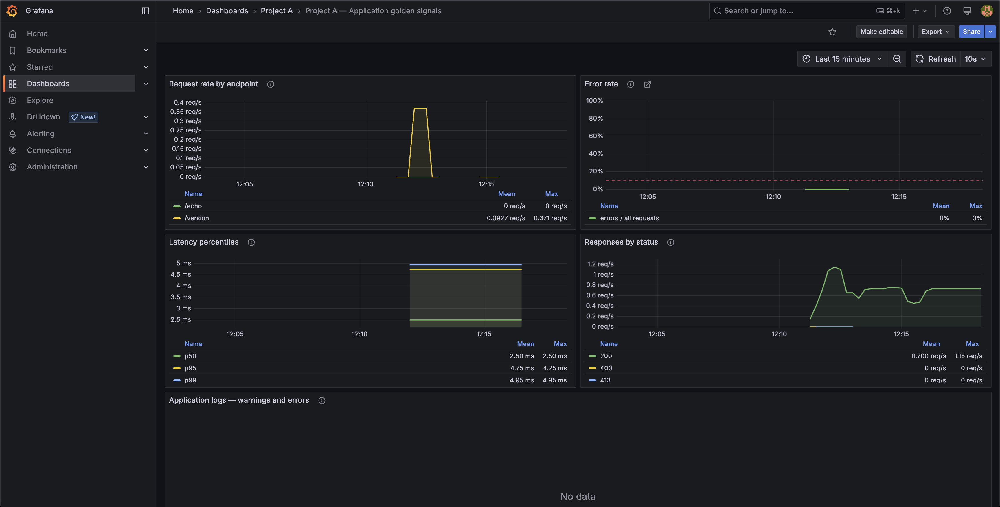

10. tananyag · ~15 perc · a dolgozat 2.7 és 5.6 alfejezete
Honnan tudod, hogy az alkalmazás éppen jól működik, és hogyan találja meg a fürtön kívül futó Prometheus a változó IP-jű podokat.
| Eszköz | Mit gyűjt | Kérdés, amire felel |
|---|---|---|
| Prometheus | számokat időben (kérésszám, hibák, válaszidő) | „Hány 500-as volt az elmúlt 5 percben?” |
| Loki (+ Alloy, ami beküldi) | naplósorokat | „Melyik kérés volt az, és mi volt benne?” |
| Grafana | semmit; megjelenít és riaszt | „Mutasd egy képernyőn, és szólj, ha baj van.” |
docs/demo-assets-sprint3/).Loki, nem ELK
Miért: a Loki csak címkéket indexel, így kis gépen is elfut, és a Grafanában egy kattintással el lehet jutni a hibaarány-grafikonról a mögötte lévő naplósorokig.
Az alternatívával: egy használható Elasticsearch kb. 2 GB memóriát kér: a 8 GB-os gép nagy részét egy nem használt képességre.
Hol: ADR-0006
A request_id naplómező, nem metrika-címke
Miért: a Prometheus minden új címkeértékhez új idősort nyit. Kérésenkénti azonosítóval kérésenként egy idősor lenne, és a Prometheus szétesne (kardinalitás). Ezért: hány hiba → Prometheus; melyik kérés → Loki.
Hol: ADR-0007
A laptopon egy konténer volt, fix névvel (projecta-flask:8000). A fürtben két backend pod van, változó IP-vel, és minden telepítés után két új jön.
Mert a Service kérésenként más podra küldhet. A számlálók podonként számolnak; egyszer az egyiket, egyszer a másikat látva a Prometheus visszaesést érzékelne, és a rate() hamis csúcsokat mutatna. Csendes hiba: a célpont végig „up”.
Csak-olvasó ServiceAccount, nem az admin-kubeconfig
Miért: a gépen lévő kubeconfig cluster-admin: aki a Prometheus konténerébe bejut, az egész fürtöt átvehetné. A megfigyelőnek csak olvasnia kell: egy Role a default névtérben, pods: get, list, watch. Írás és Secret-olvasás nincs.
Az ára: a token lejárat nélküli, mert a fürtön kívül senki nem cseréli. Korlátos kockázat, egy paranccsal visszavonható; fürtön belüli Prometheusszal eltűnne → 7. fejezet.
Hol: platform/observability/k8s/prometheus-sd-rbac.yaml
TLS-ellenőrzés marad: server_name: kubernetes.default.svc
Miért: a konténerből a k3s API a Docker-híd címén érhető el, ami nincs rajta a tanúsítványon. A server_name megmondja, melyik névre ellenőrizzen; az ellenőrzés teljes marad.
Az alternatívával: az insecure_skip_verify kikapcsolná, és a token egy közbeékelődő támadóhoz kerülhetne.
Hol: prometheus.k3s.yml; a verify-observability-k3s.sh 2. lépése openssl-lel ellenőrzi, hogy a név tényleg rajta van
watch a Role-ban?Hogy a Prometheus nyitva tartson egy kapcsolatot, amin az API minden podváltozást azonnal jelez. Nélküle csak időnként listázna, és telepítés után késve venné észre az új podokat.
A k3s podjai nem a Docker-motorban futnak, hanem a k3s saját containerd-jében, ezért a Docker socket nem tud róluk. A containerd minden pod kimenetét fájlba írja (/var/log/pods/…), CRI-formátumban; az Alloy ezt olvassa.
A Loki minden címkekombinációból külön adatfolyamot nyit, és telepítésenként két új pod-név jönne. A Prometheusban a pod címke korlátos és szükséges, mert a két replika számlálóit választja szét.
A megfigyelő réteg a fürtön kívül marad, szűk kapuval befelé
Miért: a dashboardok, a riasztás és a provisioning változatlanok maradtak; a fürtbe csak négy kis objektum került.
Az alternatívákkal: a teljes fürtön belüli stack (operator, kube-state-metrics, Alertmanager) sok új komponens egy 8 GB-os gépen, és egy új telepítési réteg a mérés lezárása előtt.
Amit így nem tud: pod-szintű CPU/memória, több csomópont naplógyűjtése → 7. fejezet.
Hol: ADR-0010
Nem futott a mérés alatt. Minden futtatás előfeltétele (E9) volt, hogy a gépen pontosan három konténer fusson: Gitea, registry, runner. A Prometheus tehát nem szólhatott bele a mért időkbe.

Az első ellenőrzés a 7. lépésen bukott: a leálló pod fázisa még Running, a script ezt nem várta. Javítva; a második futás minden lépése zöld (bizonyitek/05-megfigyeles-k3s-verify.txt).